#library(autoReg)
#library(survival)
#library(survminer)
#library(howto)
#library(flextable)
#library(ftExtra)
#library(tidyverse)4 경쟁위험(Competing Risks)
4.1 Overview
생존 자료의 통계적 분석 상의 문제점: 각 실험 개체에 대해 생존시간과 중도절단이 하나만 관측됨
생존 자료의 통계적 분석을 위해 추가되는 가정: 생존시간의 분포와 중도절단까지 시간의 분포가 서로 독립을 가정
모든 원인에 대한 암 사망률이 아닌 특정 원인에 대한 암 사망률이 관심있는 경우: 암환자의 특정원인에 의한 암 사망까지의 시간과 다른 원인에 의한 암 사망까지의 시간은 독립인가 아닌가?
각 실험개체들이 두 개 이상의 원인에 의한 사건 발생 위험에 노출되는 상황에서 만들어진 자료에 대한 분석: 특정 원인에 의한 사건에 대한 분석을 위해 “경쟁사건(competing event)”을 고려한 방법으로 접근
각 개체들이 둘 이상의 위험에 노출이 되었고 그 중 하나의 사건이 발생하면 다른 사건들이 발생할 위험들이 사라지는 경우 이 위험들을 경쟁위험(competing risks)이라 함
ex) HIV 양성반응을 가지는 사람들은 AIDS에 걸릴 위험과(AIDS에 걸리기 전) 사망할 위험에 동시에 노출됨. 이때 각 사람들은 두 가지 경우 중 하나만 발생하므로 이 두 사건은 다른 사건에 대해 경쟁위험임
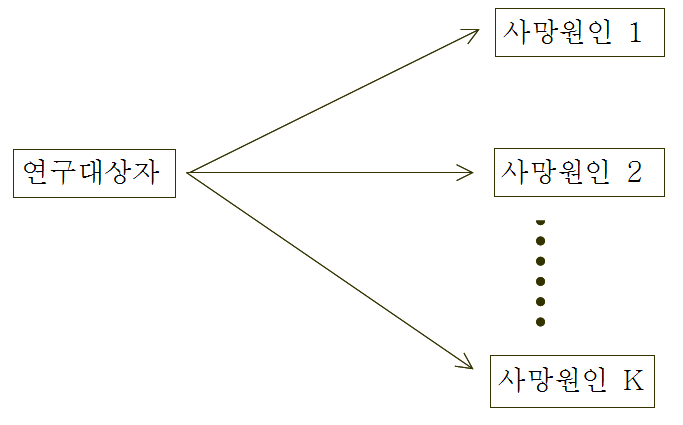
- Example: 두 개의 경쟁위험과 두 개의 치료집단을 가지는 자료의 경우
- 두 경쟁위험을 묶어서 하나의 event로 계산한 생존곡선의 추정과 검정
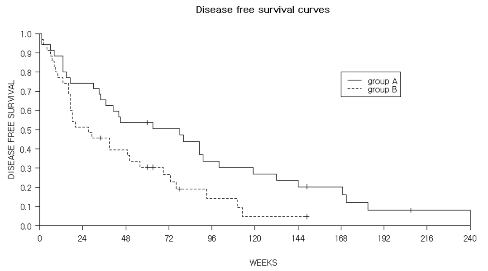
- 통계적으로 올바름
- 동일한 개체의 "경쟁"효과로 생기는 통계적 문제 해결
- 두 event 중 하나의 event 발생에 대한 치료효과의 차이를 연구하는 임상학자에게는 유용하지 않음
- 한 event의 발생 패턴을 보기 위해 다른 사상의 발생을 중도절단으로 처리하는 경우
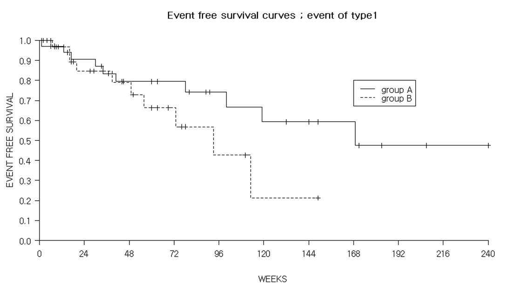
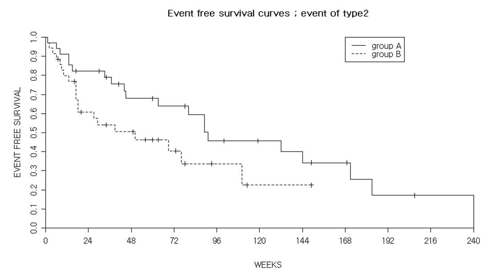
- 두 사상의 발생패턴 모두 치료집단 간에 차이가 나서 나온 결과라기보다는 각 사상별 생존곡선을 추정하기 위해 사용된 방법에 문제가 있는 것으로 보임
4.2 경쟁위험
경쟁위험 생존 데이터는 콕스 모형, 모수적 모형, 누적발생률을 사용하는 모형에 적합 가능
경쟁위험 데이터를 다루는 전형적인 방법은 원인별(cause-specific) 접근법이며, 각 이벤트 별로 생존분석을 하되 다른 종류의 이벤트는 중도절단 된 것으로 처리하는 방법
- 경쟁위험이 서로 독립이라는 가정이 필요
- 각 이벤트 별로 적합된 콕스모형 또는 생존곡선은 경쟁위험이 있을 경우 해석상의 문제가 발생
경쟁위험이 서로 독립이라는 가정이 맞지 않는 경우
- 경쟁위험을 동시에 분석할 수 있는 직접적인 방법이 없음
- 간접적으로 민감도분석을 수행가능
- 경쟁위험 사건들을 모두 이벤트가 없는 것으로 처리
- 경쟁위험 사건들을 우리가 관심있는 이벤트를 경험한 것으로 처리
KM 생존곡선의 대안으로 누적발생함수(cumulative incidence function, CIF)로 이벤트의 주변확률(marginal probability)을 추정
- CIF는 KM과 달리 승법극한(product-limit) 추정량이 아님
- 경쟁위험의 독립성 가정이 필요하기는 하지만, 독립성 여부와는 관계없이 생존곡선에 대한 의미있는 해석이 가능
CIF의 변형으로 조건부확률함수(conditional probability function, CPF)는 시간 \(t\)에 따라 다른 경쟁위험을 경험하지 않은 대상에서 위험의 조건부확률을 제공
경쟁위험의 예
- 경쟁위험은 한 대상환자에서 한 가지 이상의 이벤트(실패)가 발생할 수 있지만 그 중 하나의 이벤트만 일어날 때 발생
- 어떤 환자는 폐암으로 사망하거나 심혈관질환(예를 들어, 뇌졸중)으로 사망할 수 있으나 두 가지 사망이 동시에 일어날 수는 없음
- 뇌졸중으로 인한 사망가능성을 열어놓은 채 어떤 물질에 노출된 환자의 폐암으로 인한 사망률과 노출되지 않은 환자의 폐암으로 인한 사망률의 차이가 있는지 연구할 수 있음
- 다른 예측변수들의 영향을 통제한 상태에서 폐암으로 인한 사망률과 뇌졸중으로 인한 사망률을 비교할 수 있음
- 진행암 환자가 수술 후 병원감염으로 사망하거나 병원감염이 일어나기 전 수술로 인해 사망
- 감염관리에 관심이 있는 연구자에게는 원내감염이 주된 관심사이기 때문에 수술 후 사망은 원내감염으로 인한 사망의 경쟁위험이 됨
- 비전이성 골육종 환자에서 화학요법 및 수술 후 추적 관찰 중 국소재발이나 폐전이 또는 다른 장기에 전이를 일으킬 수 있음
- 경쟁위험은 국소재발, 폐전이, 다른 장기로 전이가 됨
- 각 실패의 위험비를 추정하거나, 폐전이의 실패율을 국소재발이나 다른 장기 전이의 실패율과 비교할 수 있음
- 세가지 유형은 사망사건이 아니기 때문에 재발이 가능하며, 첫 번째 발생한 사건만을 목료로 하면 경쟁위험 모형을 적용할 수 있음
4.3 원인별 누적발생함수
- 경쟁위험 데이터에 대한 전형적인 접근방법은 각각의 경쟁위험(실패 또는 이벤트)을 분리하여 각각의 모형에 적합시키는 방법
- 이때 다른 경쟁위험들은 중도절단된 것으로 간주
- 만일 한 가지 실패 유형만이 일차적 관심사라면 경쟁위험들은 중도절단된 것으로 처리하고 그 실패유형에 대한 위험비를 추정
원인별 위험함수(cause-specific hazard function)
- 원인별 위험함수는 다른 모든 사건 원인들이 존재할 때, \(t\) 시점에서 특정원인 \(j\)에 의한 실패가 일어날 확률을 의미
\[ h_j(t)=\lim_{h->0}\frac{P(t<T<t+h , \epsilon=j |T \ge t)}{h}, \,\,\, j=1, \ldots, K \]
Overall hazard function
- Overall hazard function은 \(t\) 시점에 어떤 원인에 의해서든지 실패할 확률을 의미
\[ h(t)=\sum_{j=1}^K h_j(t) \]
원인별 누적발생함수(cause-specific cumulative incidence function; CIF)
\[ F_j(t)=P(T \le t, \epsilon=j)=\int_0^t h_j(t) S(t)dt, \,\,\, j=1,\ldots, K \]
여기서 \(S(t)\)는
\[ S(t)=exp \left\lbrace -\int_o^t \sum_{j=1}^K h_j(t)dt \right\rbrace \]
CIF는 모든 다른 실패 원인이 존재할 때, \(t\) 시점까지 원인 \(j\)에 의해 실패할 확률을 의미
\(j\)번째 누적발생함수는 다른 원인별 위험함수와 서로 연관되어 있음
- 경쟁위험이 하나인 경우 즉, 하나의 사건만 관심사항이라면 CIF=1-KM으로 나타남
- 경쟁위험이 둘 이상인 경우 CIF는 원인별 위험함수에서 추정되며, 경쟁위험이 있는 경우 서로 독립이라는 가정이 필요 없음
cif 추정 방법
- 관심 있는 이벤트를 \(j\)라고 할 때 정렬된 실패시간 \(t_m\)에서의 위험률을 계산
\[ \hat{h}_j (t_m)=\frac{d_{jm}}{n_m} \]
이때 \(d_{jm}\)은 시간 \(t_m\)에서 발생한 이벤트 \(j\)의 개수이며 \(n_m\)은 \(t_m\)에서의 위험대상 수임
- 실패시간 \(t_m\)에서 실패가 발생하려면 대상환자가 실패가 일어나기 전 시간까지 살아 있어야 하므로 \(S(t_{m-1})\)을 추정 - \(S(t_{m-1})\)은 바로 전의 실패시간 \(t_{m-1}\)에서 경쟁위험이 모두 없는 총 생존확률을 의미 - 이때, 생존확률은 경쟁위험을 센서링이 아닌 이벤트로 발생한 것으로 간주하여 KM 방법과 동일하게 계산
\[ \hat{S}(t_{m-1})=\prod_{i=1}^{m-1} \left( 1-\frac{d_i}{n_i}\right)^{\delta_i} \]
여기서 \(d_i=\sum_{j=1}^K d_{ji}\): \(t_{i}\) 시점에서의 모든 원인의 실패수
- 시간 \(t_m\)에서의 이벤트 \(j\)의 실패발생률 \(\hat{I}_j(t_m)\)을 추정
\[ \hat{I}_j(t_m)=\hat{h}_j (t_m)\hat{S}(t_{m-1}) \]
- 시간 \(t_m\)에서의 이벤트 \(j\)의 누적발생률(\(CIF_j\))은 실패시간 \(t_1\) 부터 \(t_j\)까지의 실패방샐률의 누적합계로 산출
\[ \hat{CIF}_j(t_m)=\sum_{m:t_m \le t}\hat{h}_j (t_m)\hat{S}(t_{m-1}) \]
- 경쟁위험이 없는 경우 \(CIF=1-KM\)이지만 경쟁위험이 있는 경우에는 \(\hat{CIF}_j(t_m) \ne 1-KM_c\)임
4.3.0.1 경쟁위험이 없는 경우 KM curve와 CIF curve 비교
- 필요 패키지 로드
library(autoReg)
library(survival)
library(ggplot2)
km=survfit(Surv(time,status)~1, data=anderson)
km1=data.frame(x=c(0,km$time),y=c(0,1-km$surv))
ggplot()+
geom_step(data=km1,aes(x=x,y=y))+
labs(x='Time',y='1-KM')+
annotate('text',x=20,y=0.5,label='1-KM')+
scale_x_continuous(limits = c(0, 35)) +
scale_y_continuous(limits = c(0, 1)) +
theme_classic()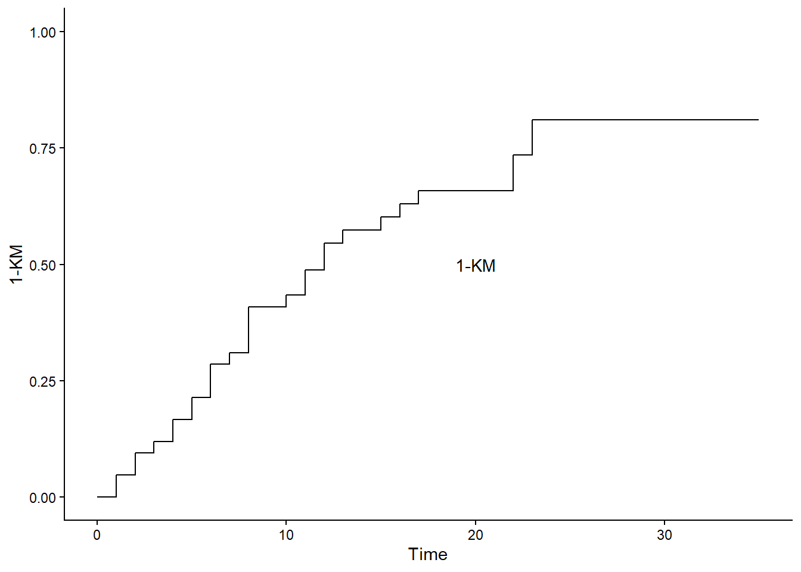
library(cmprsk)
cif <- with(anderson,cmprsk::cuminc(as.numeric(time),status))
cif1=data.frame(x=cif$'1 1'$time, y=cif$'1 1'$est)
ggplot()+
geom_step(data=cif1,aes(x=x,y=y))+
labs(x='Time',y='CIF')+
annotate('text',x=20,y=0.5,label='CIF')+
scale_x_continuous(limits = c(0, 35)) +
scale_y_continuous(limits = c(0, 1)) +
theme_classic()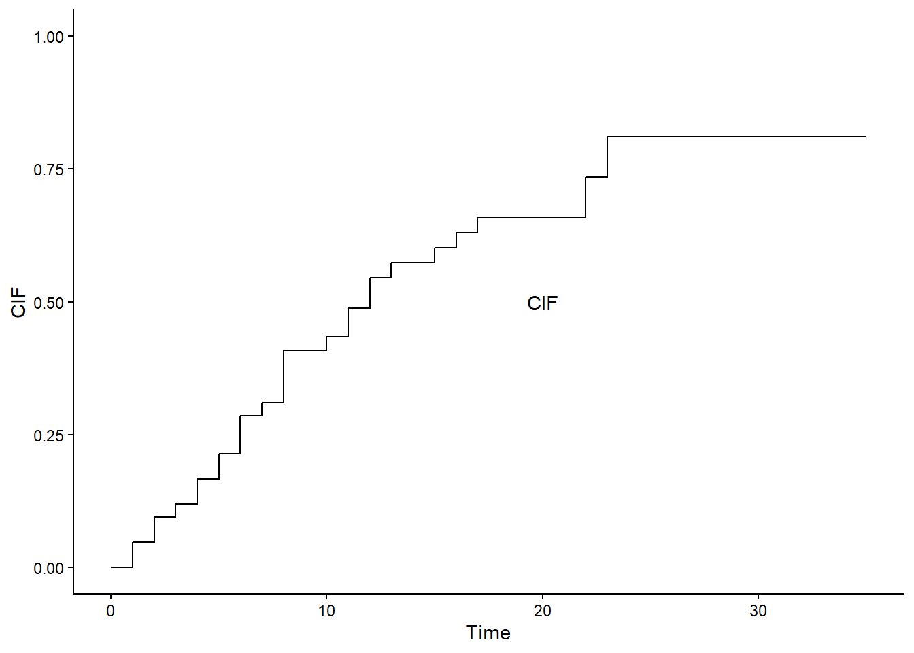
경쟁위험이 있는 경우 CIF
- 가상의 두경부암 환자 26명에게 모두 방사선 치료를 하였으며, 암에 의해 사망(status=1)하거나, 다른 원인에 의해 사망(status=2)하거나 생존(status=0) 하였다.
time=c(0.7,3,4,9,6,6,6,9,10,10.8,17.1,20.3,1.5,2.8,3.8,4.7,7,10,10,11.2,3.2,7.6,10,11,15,24.4)
status=c(rep(1,12),rep(2,8),rep(0,6))
df=data.frame(time,status)
head(df, 10) time status
1 0.7 1
2 3.0 1
3 4.0 1
4 9.0 1
5 6.0 1
6 6.0 1
7 6.0 1
8 9.0 1
9 10.0 1
10 10.8 1- CIF 추정값은 다음과 같음
library(howto)
library(flextable)
#library(officer)
#library(ftExtra)
result=data2CIC(df,cause=1,add.CPC=FALSE)
names(result)=c("t","n","d","h(t)","s(t-1)","I(t)","CIF")
flextable(result)t | n | d | h(t) | s(t-1) | I(t) | CIF |
|---|---|---|---|---|---|---|
0.0 | 26 | 0 | 0.000 | 0.000 | 0.000 | |
0.7 | 26 | 1 | 0.038 | 1.000 | 0.038 | 0.038 |
1.5 | 25 | 0 | 0.000 | 0.962 | 0.000 | 0.038 |
2.8 | 24 | 0 | 0.000 | 0.923 | 0.000 | 0.038 |
3.0 | 23 | 1 | 0.043 | 0.885 | 0.038 | 0.077 |
3.2 | 22 | 0 | 0.000 | 0.846 | 0.000 | 0.077 |
3.8 | 21 | 0 | 0.000 | 0.846 | 0.000 | 0.077 |
4.0 | 20 | 1 | 0.050 | 0.806 | 0.040 | 0.117 |
4.7 | 19 | 0 | 0.000 | 0.766 | 0.000 | 0.117 |
6.0 | 18 | 3 | 0.167 | 0.725 | 0.121 | 0.238 |
7.0 | 15 | 0 | 0.000 | 0.604 | 0.000 | 0.238 |
7.6 | 14 | 0 | 0.000 | 0.564 | 0.000 | 0.238 |
9.0 | 13 | 2 | 0.154 | 0.564 | 0.087 | 0.325 |
10.0 | 11 | 1 | 0.091 | 0.477 | 0.043 | 0.368 |
10.8 | 7 | 1 | 0.143 | 0.347 | 0.050 | 0.418 |
11.0 | 6 | 0 | 0.000 | 0.298 | 0.000 | 0.418 |
11.2 | 5 | 0 | 0.000 | 0.298 | 0.000 | 0.418 |
15.0 | 4 | 0 | 0.000 | 0.238 | 0.000 | 0.418 |
17.1 | 3 | 1 | 0.333 | 0.238 | 0.079 | 0.497 |
20.3 | 2 | 1 | 0.500 | 0.159 | 0.079 | 0.577 |
24.4 | 1 | 0 | 0.000 | 0.079 | 0.000 | 0.577 |
- 가장 높은 CIF 값은 마지막으로 관찰된 이벤트가 일어난 \(t=20.3\)주의 0.577으로 나타남
- 따라서 20개월에서 암으로 인한 사망의 누적위험(즉 주변확률)은 경쟁위험이 있는 상태에서 \(57.7\%\)임
CIF와 1-KM 비교
- 1-KM은 암으로 인한 사망으로 인한 실패 확률을 과대추정함
fit=survfit(Surv(time,status==1)~1,data=df)
df1=data.frame(x=c(0,fit$time),y=c(0,1-fit$surv))
ggplot()+
geom_step(data=result,aes(x=t,y=CIF))+
geom_step(data=df1,aes(x=x,y=y),lty=2,color='red')+
labs(x='months',y='proportion dying')+
annotate('text',x=14,y=0.38,label='CIF')+
annotate('text',x=14,y=0.5,label='1-KM',color='red')+
theme_classic()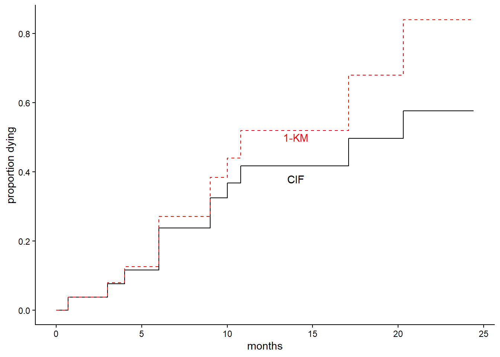
4.4 누적조건부확률함수
경쟁위험에 대한 또다른 접근방법으로 누적조건부확률함수(cumulative conditional probability function, CPF)가 있음
CPF는 \(t\) 시간까지 다른 경쟁위험을 경험하지 못한 대상에서 관심 이벤트 \(j\)를 경험할 조건부 확률
\[ CPF=Pr(T_j \le t | T \ge t) \]
여기서 \(T_j\)는 이벤트 \(j\)가 일어날 때까지의 시간, \(T\)는 다른 경쟁위험 이벤트가 일어날때까지의 시간
- 이벤트 타입 \(j\)에 대해 \(CPF\)는 \(CIF_j\)를 \(1-CIF_{j'}\)으로 나눈 값으로 \(CIF_{j'}\)은 경쟁위험 \(j\) 이외에 다른 위험들의 누적발생률임
\[ CPF=\frac{CIF_j}{1-CIF_{j'}} \]
- 위의 예제에서 CPF를 계산하면 다음과 같음
library(howto)
library(flextable)
result2=data2CIC(df,cause=1)
names(result2)=c("t","n","S(t)","CIF1","CIF2","CPF")
flextable(result2)t | n | S(t) | CIF1 | CIF2 | CPF |
|---|---|---|---|---|---|
0.0 | 26 | 0.000 | 0.000 | 0.000 | |
0.7 | 26 | 1.000 | 0.038 | 0.000 | 0.038 |
1.5 | 25 | 0.962 | 0.038 | 0.038 | 0.040 |
2.8 | 24 | 0.923 | 0.038 | 0.077 | 0.042 |
3.0 | 23 | 0.885 | 0.077 | 0.077 | 0.083 |
3.2 | 22 | 0.846 | 0.077 | 0.077 | 0.083 |
3.8 | 21 | 0.846 | 0.077 | 0.117 | 0.087 |
4.0 | 20 | 0.806 | 0.117 | 0.117 | 0.133 |
4.7 | 19 | 0.766 | 0.117 | 0.158 | 0.139 |
6.0 | 18 | 0.725 | 0.238 | 0.158 | 0.283 |
7.0 | 15 | 0.604 | 0.238 | 0.198 | 0.297 |
7.6 | 14 | 0.564 | 0.238 | 0.198 | 0.297 |
9.0 | 13 | 0.564 | 0.325 | 0.198 | 0.405 |
10.0 | 11 | 0.477 | 0.368 | 0.285 | 0.515 |
10.8 | 7 | 0.347 | 0.418 | 0.285 | 0.584 |
11.0 | 6 | 0.298 | 0.418 | 0.285 | 0.584 |
11.2 | 5 | 0.298 | 0.418 | 0.344 | 0.637 |
15.0 | 4 | 0.238 | 0.418 | 0.344 | 0.637 |
17.1 | 3 | 0.238 | 0.497 | 0.344 | 0.758 |
20.3 | 2 | 0.159 | 0.577 | 0.344 | 0.879 |
24.4 | 1 | 0.079 | 0.577 | 0.344 | 0.879 |
CIF와 1-KM, CPF 비교
ggplot()+
geom_step(data=result,aes(x=t,y=CIF))+
geom_step(data=df1,aes(x=x,y=y),lty=2,color='red')+
geom_step(data=result2,aes(x=t,y=CPF),lty=3, color='blue')+
labs(x='months',y='proportion dying')+
annotate('text',x=14,y=0.38,label='CIF')+
annotate('text',x=14,y=0.48,label='1-KM',color='red')+
annotate('text',x=14,y=0.6,label='CPF',color='blue')+
theme_classic()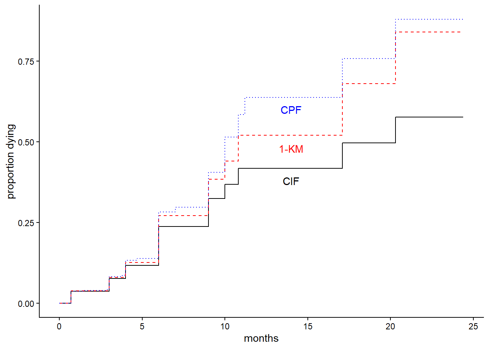
- Ordering of the functions
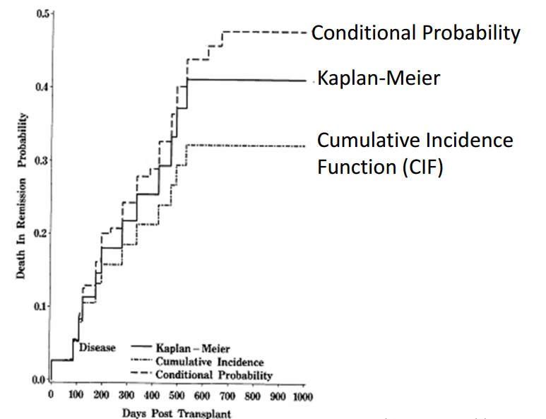
Byar Example (howto package)
- 3기(전립선 밖으로 국소확장) 또는 4기(타장기 전이 또는 acid phosphatase 효소의 상승)의 전립선암 환자를 대상으로 위약 또는 3가지 용량의 에스트로젠(diethylstilbesterol)을 사용한 무작위 임상시험 데이터
- 생존의 경우 0, 전립선암으로 인한 사망은 1, 심혈관질환으로 인한 사망은 2, 기타 원인으로 인한 사망은 3으로 기록
- 나이, 몸무게, 수행상태, 심혈관질환의 과거력, 혈중 헤모글리빈 농도, 원발성 종괴의 크기, 병기와 조직학적 지표 등
- 경쟁위험이 있는 상태에서 위험인자의 영향을 보정한 후 치료의 효과를 평가하는 것이 일차적인 목표
- 임상적으로 전립선암으로 인한 사망과 심혈관질환으로 인한 사망, 기타 원인에 의한 사망은 서로 독립적으로 간주 가능
library(howto)
cif_Byar <- with(Byar,cmprsk::cuminc(dtime,status2))
cifEstimates and Variances:
$est
5 10 15 20 25 30
1 1 0.2142857 0.4345684 0.6021037 0.658946 0.8105256 0.8105256
$var
5 10 15 20 25 30
1 1 0.004117292 0.006173271 0.00656581 0.006319894 0.005626118 0.005626118plot(cif_Byar, curvlab=c("전립선암 사망", "심혈관 사망", "기타 사망"), ylim=c(0,0.4), col=c(1,2,4))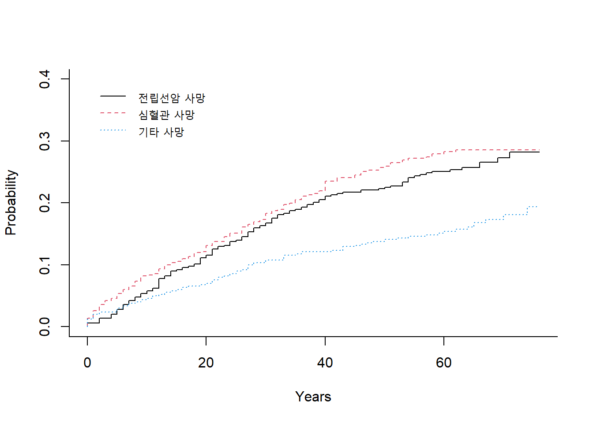
library(survminer)
ggcompetingrisks(cif_Byar, multiple_panels=F, conf.int=T)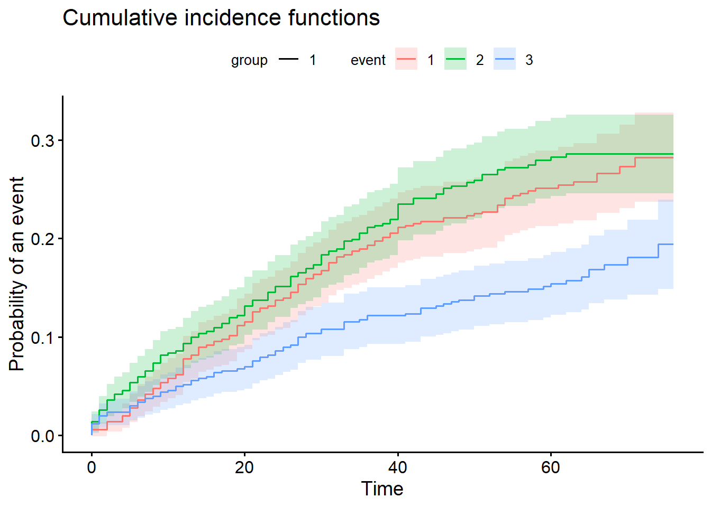
4.5 누적발생함수 비교
- Gray test (1988)
- Log-rank test와 유사한 형태로 검정
- 가설
\[ H_0 : F_{1k}=F_1^0, \,\,\, k=1,\ldots, K \]
library(autoReg)
ggcmprsk(dtime+status2~Rx,data=Byar,
id=c("alive","cancer death","CVD death","Other death"),
strata=c("placebo or 0.2mg DES","1.0mg or 5.0mg DES"))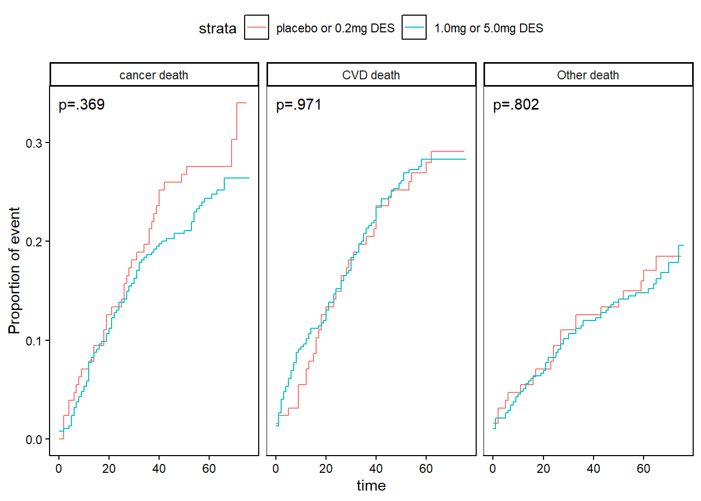
4.6 Cause-specific hazard (CHS) model
- 원인별 위험함수(cause-specific hazard function(CSH))를 설명하기 위해 다음의 비례위험모형을 가정
\[ h_j(t;x)=h_{j0}(t)exp(\beta'_jx) , \,\,\, j=1,\ldots, K \]
\[ log(h_j(t;x_i))=log(h_{j0}(t))+\beta_{j1}x_1+\cdots+\beta_{jp}x_p \]
여기서 \(j\)번째 원인별 위험함수는 실패 원인에 따라 정의되며, 관심 원인을 제외한 나머지 원인은 모두 중도절단으로 처리
원인별 위험함수에서 추정된 회귀계수는 다른 원인의 위험률이 전혀 반영되지 않음
경쟁위험모형에서는 원인들이 서로 독립적이지 않는 한, 해석 상의 문제점이 발생 할 수 있음
Byar 데이터를 3개의 경쟁위험과 8개의 예측변수가 있는 콕스모형에 적합
- 경쟁위험은 전립선암으로 인한 사망, 심혈관질환으로 인한 사망, 기타 원인에 의한 사망 3가지
- Rx, Age, Wt, PF, Hx, Hb, SZ, SG 8개의 예측변수
- 전립선암에 의한 사망에 대한 원인별 위험함수
fit1=coxph(Surv(dtime,status2==1)~Rx+Age+Wt+PF+Hx+Hb+SZ+SG,data=Byar)
summary(fit1)Call:
coxph(formula = Surv(dtime, status2 == 1) ~ Rx + Age + Wt + PF +
Hx + Hb + SZ + SG, data = Byar)
n= 483, number of events= 125
(19 observations deleted due to missingness)
coef exp(coef) se(coef) z Pr(>|z|)
Rx -0.42272 0.65526 0.20191 -2.094 0.0363 *
Age -0.12008 0.88685 0.16017 -0.750 0.4534
Wt 0.12922 1.13794 0.15095 0.856 0.3920
PF 0.40026 1.49222 0.27350 1.463 0.1433
Hx -0.09905 0.90569 0.20024 -0.495 0.6208
Hb 0.40709 1.50244 0.19608 2.076 0.0379 *
SZ 1.17240 3.22974 0.21591 5.430 5.64e-08 ***
SG 2.18090 8.85428 0.28288 7.709 1.26e-14 ***
---
Signif. codes: 0 '***' 0.001 '**' 0.01 '*' 0.05 '.' 0.1 ' ' 1
exp(coef) exp(-coef) lower .95 upper .95
Rx 0.6553 1.5261 0.4411 0.9734
Age 0.8868 1.1276 0.6479 1.2139
Wt 1.1379 0.8788 0.8465 1.5297
PF 1.4922 0.6701 0.8730 2.5506
Hx 0.9057 1.1041 0.6117 1.3410
Hb 1.5024 0.6656 1.0230 2.2065
SZ 3.2297 0.3096 2.1154 4.9312
SG 8.8543 0.1129 5.0858 15.4151
Concordance= 0.807 (se = 0.02 )
Likelihood ratio test= 162.4 on 8 df, p=<2e-16
Wald test = 124 on 8 df, p=<2e-16
Score (logrank) test = 184.7 on 8 df, p=<2e-16- CVD에 대한 원인별 위험함수
fit2=coxph(Surv(dtime,status2==2)~Rx+Age+Wt+PF+Hx+Hb+SZ+SG,data=Byar)
summary(fit2)Call:
coxph(formula = Surv(dtime, status2 == 2) ~ Rx + Age + Wt + PF +
Hx + Hb + SZ + SG, data = Byar)
n= 483, number of events= 139
(19 observations deleted due to missingness)
coef exp(coef) se(coef) z Pr(>|z|)
Rx 0.05977 1.06159 0.19829 0.301 0.7631
Age 0.34558 1.41281 0.13514 2.557 0.0106 *
Wt 0.06326 1.06531 0.14951 0.423 0.6722
PF 0.46220 1.58757 0.27077 1.707 0.0878 .
Hx 1.10438 3.01736 0.18561 5.950 2.68e-09 ***
Hb 0.02565 1.02598 0.20384 0.126 0.8999
SZ -0.15487 0.85652 0.36091 -0.429 0.6678
SG -0.04148 0.95937 0.18508 -0.224 0.8227
---
Signif. codes: 0 '***' 0.001 '**' 0.01 '*' 0.05 '.' 0.1 ' ' 1
exp(coef) exp(-coef) lower .95 upper .95
Rx 1.0616 0.9420 0.7197 1.566
Age 1.4128 0.7078 1.0840 1.841
Wt 1.0653 0.9387 0.7947 1.428
PF 1.5876 0.6299 0.9338 2.699
Hx 3.0174 0.3314 2.0972 4.341
Hb 1.0260 0.9747 0.6881 1.530
SZ 0.8565 1.1675 0.4222 1.738
SG 0.9594 1.0424 0.6675 1.379
Concordance= 0.671 (se = 0.024 )
Likelihood ratio test= 56.56 on 8 df, p=2e-09
Wald test = 54.35 on 8 df, p=6e-09
Score (logrank) test = 60.28 on 8 df, p=4e-10- 기타 원인에 의한 사망에 대한 원인별 위험함수
fit3=coxph(Surv(dtime,status2==3)~Rx+Age+Wt+PF+Hx+Hb+SZ+SG,data=Byar)
summary(fit3)Call:
coxph(formula = Surv(dtime, status2 == 3) ~ Rx + Age + Wt + PF +
Hx + Hb + SZ + SG, data = Byar)
n= 483, number of events= 80
(19 observations deleted due to missingness)
coef exp(coef) se(coef) z Pr(>|z|)
Rx -0.06391 0.93809 0.25556 -0.250 0.80251
Age 0.66893 1.95214 0.17085 3.915 9.03e-05 ***
Wt 0.57182 1.77149 0.19355 2.954 0.00313 **
PF 0.12830 1.13690 0.40911 0.314 0.75382
Hx 0.05426 1.05576 0.23974 0.226 0.82096
Hb 0.48641 1.62647 0.23501 2.070 0.03848 *
SZ 0.71725 2.04879 0.37282 1.924 0.05437 .
SG -0.77145 0.46234 0.26247 -2.939 0.00329 **
---
Signif. codes: 0 '***' 0.001 '**' 0.01 '*' 0.05 '.' 0.1 ' ' 1
exp(coef) exp(-coef) lower .95 upper .95
Rx 0.9381 1.0660 0.5685 1.5480
Age 1.9521 0.5123 1.3966 2.7286
Wt 1.7715 0.5645 1.2122 2.5887
PF 1.1369 0.8796 0.5099 2.5349
Hx 1.0558 0.9472 0.6599 1.6890
Hb 1.6265 0.6148 1.0261 2.5781
SZ 2.0488 0.4881 0.9866 4.2545
SG 0.4623 2.1629 0.2764 0.7734
Concordance= 0.713 (se = 0.029 )
Likelihood ratio test= 39.45 on 8 df, p=4e-06
Wald test = 41.64 on 8 df, p=2e-06
Score (logrank) test = 43.32 on 8 df, p=8e-074.7 Fine and Gray (subdistribution) model
일반적으로 누적발생함수(CIF)에 대한 공변량의 효과와 원인별 위험함수(CSH)에 대한 공변량의 효과는 서로 다르게 나타남
CIF \(F_j(t)\)는 \(j\)번째 원인의 위험함수뿐만 아니라 다른 원인들의 위험함수들의 결합 형태이므로 다른 원인들의 위험함수의 영향을 받음
Fine and Gray (1999)는 subdistribution에 근거한 회귀모형을 통해 누적발생함수를 추정하고자 하였으며, 여기서 subdistribution은 \(\lim_{t->\infty}F_j(t)=Pr(\epsilon=j)\)로부터 유래한 것으로 \(K\)개의 원인별 분포함수라는 의미임
공변량을 포함한 subdistribution 위험함수
\[ \begin{aligned} h_{j}^s (t; x) =& \lim _{h->0} \left\lbrace \frac{Pr[t \le T_j < t+h , | (T \ge t) \cup (T \le t, \epsilon \ne j), x} {h} \right\rbrace \\ =& \frac{d F_j (t,x)/ dt} {1-F_j (t), x} = - \frac{d log (1-F_j (t,x))} {dt} \end{aligned} \]
여기서 \(x\)는 공변량 벡터이며, 원인별 위험함수와 가장 큰 차이점은 위험함수의 정의임
subdistribution에서는 다른 유형으로 이미 사망한 사람도 위험 그룹에 포함함
subdistribution hazard model
\[ h_j^s (t; x)=h_{j0}^s (t) exp(x(t)\beta) \]
\[ log(h_j^s(t;x))=log(h_{j0}^s (t))+\beta_1x_1(t)+\cdots+\beta_px_p(t) \]
- Subdistribution hazard model 원리
\[ F_j(t,x)=1-exp\left( -\int_0^t h_j^s (t,x) dt \right)=1-exp \left(-\int_0^t h_{j0}^s (t) exp(x(t)\beta) dt \right) \]
- 회귀계수 \(\beta\)가 양수이면 \(F_j(t,x)\)는 공변량 \(x\)에 대해 단조 증가함수가 되므로, 공변량 \(x\)가 증가함에 따라 동일한 시점에서 \(F_j(t,x)\)도 증가
- 즉, 회귀계수 \(\beta\)가 양수이면 공변량 \(x\)가 증가함에 따라 \(t\)시점까지 원인 \(j\)에 의해 failure가 발생할 확률도 증가
Byar 데이터를 이용한 subdistribution model
- 전립선암에 의한 사망에 대한 원인별 위험함수
Byar1 <- na.omit(Byar)
cov1 <- model.matrix(~Rx+Age+Wt+PF+Hx+Hb+SZ+SG, data=Byar1)[,-1]
sdhr1 <- cmprsk::crr(ftime=Byar1$dtime, fstatus=Byar1$status2, cov1, failcode=1, cencode=0)
summary(sdhr1)Competing Risks Regression
Call:
cmprsk::crr(ftime = Byar1$dtime, fstatus = Byar1$status2, cov1 = cov1,
failcode = 1, cencode = 0)
coef exp(coef) se(coef) z p-value
Rx -0.1489 0.862 0.216 -0.6895 4.9e-01
Age -0.1892 0.828 0.161 -1.1727 2.4e-01
Wt 0.0108 1.011 0.160 0.0675 9.5e-01
PF 0.3171 1.373 0.278 1.1399 2.5e-01
Hx -0.2408 0.786 0.205 -1.1763 2.4e-01
Hb 0.3299 1.391 0.210 1.5686 1.2e-01
SZ 0.7851 2.193 0.229 3.4349 5.9e-04
SG 2.1818 8.862 0.288 7.5831 3.4e-14
exp(coef) exp(-coef) 2.5% 97.5%
Rx 0.862 1.161 0.564 1.32
Age 0.828 1.208 0.603 1.14
Wt 1.011 0.989 0.739 1.38
PF 1.373 0.728 0.796 2.37
Hx 0.786 1.272 0.526 1.17
Hb 1.391 0.719 0.921 2.10
SZ 2.193 0.456 1.401 3.43
SG 8.862 0.113 5.042 15.58
Num. cases = 475
Pseudo Log-likelihood = -652
Pseudo likelihood ratio test = 140 on 8 df,#model=crrFormula(dtime+status2~Rx+Age+Wt+PF+Hx+Hb+SZ+SG,data=Byar1)
#model- CVD에 대한 원인별 위험함수
sdhr2 <- cmprsk::crr(ftime=Byar1$dtime, fstatus=Byar1$status2, cov1, failcode=2, cencode=0)
summary(sdhr2)Competing Risks Regression
Call:
cmprsk::crr(ftime = Byar1$dtime, fstatus = Byar1$status2, cov1 = cov1,
failcode = 2, cencode = 0)
coef exp(coef) se(coef) z p-value
Rx 0.1004 1.106 0.199 0.5049 6.1e-01
Age 0.1878 1.207 0.136 1.3804 1.7e-01
Wt -0.0103 0.990 0.148 -0.0697 9.4e-01
PF 0.3339 1.396 0.274 1.2183 2.2e-01
Hx 1.0988 3.001 0.188 5.8305 5.5e-09
Hb -0.2345 0.791 0.211 -1.1113 2.7e-01
SZ -0.4958 0.609 0.375 -1.3236 1.9e-01
SG -0.2300 0.795 0.193 -1.1922 2.3e-01
exp(coef) exp(-coef) 2.5% 97.5%
Rx 1.106 0.904 0.749 1.63
Age 1.207 0.829 0.924 1.58
Wt 0.990 1.010 0.741 1.32
PF 1.396 0.716 0.816 2.39
Hx 3.001 0.333 2.074 4.34
Hb 0.791 1.264 0.523 1.20
SZ 0.609 1.642 0.292 1.27
SG 0.795 1.259 0.544 1.16
Num. cases = 475
Pseudo Log-likelihood = -799
Pseudo likelihood ratio test = 55.6 on 8 df,- 기타 원인에 의한 사망에 대한 원인별 위험함수
sdhr3 <- cmprsk::crr(ftime=Byar1$dtime, fstatus=Byar1$status2, cov1, failcode=3, cencode=0)
summary(sdhr3)Competing Risks Regression
Call:
cmprsk::crr(ftime = Byar1$dtime, fstatus = Byar1$status2, cov1 = cov1,
failcode = 3, cencode = 0)
coef exp(coef) se(coef) z p-value
Rx -0.172 0.842 0.257 -0.668 0.50000
Age 0.562 1.754 0.192 2.934 0.00330
Wt 0.470 1.600 0.195 2.417 0.01600
PF -0.511 0.600 0.461 -1.109 0.27000
Hx -0.271 0.763 0.242 -1.120 0.26000
Hb 0.344 1.411 0.231 1.493 0.14000
SZ 0.339 1.404 0.373 0.911 0.36000
SG -0.971 0.379 0.259 -3.752 0.00018
exp(coef) exp(-coef) 2.5% 97.5%
Rx 0.842 1.187 0.509 1.394
Age 1.754 0.570 1.205 2.553
Wt 1.600 0.625 1.093 2.343
PF 0.600 1.667 0.243 1.481
Hx 0.763 1.311 0.475 1.225
Hb 1.411 0.709 0.898 2.218
SZ 1.404 0.712 0.676 2.916
SG 0.379 2.641 0.228 0.629
Num. cases = 475
Pseudo Log-likelihood = -456
Pseudo likelihood ratio test = 33.6 on 8 df,- 다른 경쟁위험을 censoring으로 처리한 경우
modelCox = coxph(Surv(dtime,statusCancer)~Rx+Age+Wt+PF+Hx+Hb+SZ+SG, data=Byar1)
summary(modelCox) Call:
coxph(formula = Surv(dtime, statusCancer) ~ Rx + Age + Wt + PF +
Hx + Hb + SZ + SG, data = Byar1)
n= 475, number of events= 121
coef exp(coef) se(coef) z Pr(>|z|)
Rx -0.36428 0.69470 0.20667 -1.763 0.0780 .
Age -0.08657 0.91707 0.16493 -0.525 0.5997
Wt 0.10733 1.11331 0.15481 0.693 0.4881
PF 0.42238 1.52558 0.27422 1.540 0.1235
Hx -0.08853 0.91527 0.20243 -0.437 0.6618
Hb 0.42463 1.52903 0.19703 2.155 0.0312 *
SZ 1.13777 3.11979 0.22137 5.140 2.75e-07 ***
SG 2.22480 9.25161 0.29162 7.629 2.36e-14 ***
---
Signif. codes: 0 '***' 0.001 '**' 0.01 '*' 0.05 '.' 0.1 ' ' 1
exp(coef) exp(-coef) lower .95 upper .95
Rx 0.6947 1.4395 0.4633 1.042
Age 0.9171 1.0904 0.6638 1.267
Wt 1.1133 0.8982 0.8219 1.508
PF 1.5256 0.6555 0.8913 2.611
Hx 0.9153 1.0926 0.6155 1.361
Hb 1.5290 0.6540 1.0392 2.250
SZ 3.1198 0.3205 2.0216 4.815
SG 9.2516 0.1081 5.2238 16.385
Concordance= 0.807 (se = 0.02 )
Likelihood ratio test= 158.9 on 8 df, p=<2e-16
Wald test = 119.2 on 8 df, p=<2e-16
Score (logrank) test = 180.3 on 8 df, p=<2e-164.8 Proportional odds model (using CPF)
library(Cprob)
tis=seq(median(Byar$dtime), max(Byar$dtime), length=50)
fitcpf <- cpfpo(Hist(dtime,status2)~Rx+Age+Wt+PF+Hx+Hb+SZ+SG, data=Byar1, tis=tis)
fitcpfTest for non-significant effect
stat pvalue
(Intercept) -5.2683850 1.376292e-07
Rx -1.8737312 6.096749e-02
Age 0.3561029 7.217635e-01
Wt 0.1372952 8.907975e-01
PF 1.6571722 9.748467e-02
Hx -0.0993502 9.208602e-01
Hb 1.8132344 6.979568e-02
SZ 4.5533324 5.280274e-06
SG 7.7916658 6.661338e-15
Test for constant fit
coef exp.coef SE.coef stat pvalue
(Intercept) -2.24152166 0.1062966 0.4254666 9.7930890 0.000000e+00
Rx -0.74932287 0.4726865 0.3999095 -1.4354568 1.511570e-01
Age 0.10805810 1.1141125 0.3034463 -0.4614779 6.444558e-01
Wt 0.03429300 1.0348878 0.2497757 -0.2678545 7.888113e-01
PF 0.98580630 2.6799719 0.5948726 1.6569394 9.753173e-02
Hx -0.03349128 0.9670633 0.3371033 0.2024179 8.395900e-01
Hb 0.55042468 1.7339892 0.3035596 -0.4536257 6.500982e-01
SZ 1.92402389 6.8484605 0.4225529 5.3731875 7.735680e-08
SG 2.84547522 17.2097351 0.3651947 -2.0282047 4.253936e-02library(lattice)
xyplot(fitcpf, scales=list(relation="free"))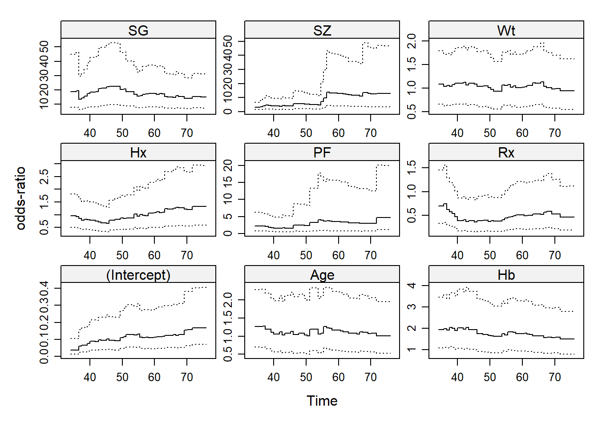
4.9 SAS 예제
- CIF and Gray test
proc lifetest data=byar plots=cif(test);
time dtime*status2(0) / eventcode=1;
strata rx;
run;
- No competing risk model
proc phreg data=byar zph;
*class rx;
model dtime*status2(0) = rx age wt pf hx hb sz sg / risklimits;
run;- Cause-specific model
proc phreg data=byar;
*class rx;
model dtime*status2(0,2,3) = rx age wt pf hx hb sz sg / risklimits;
run;
- Subdistribution model
proc phreg data=byar;
model dtime*status2(0) = rx age wt pf hx hb sz sg / eventcode=1 risklimits;
run;